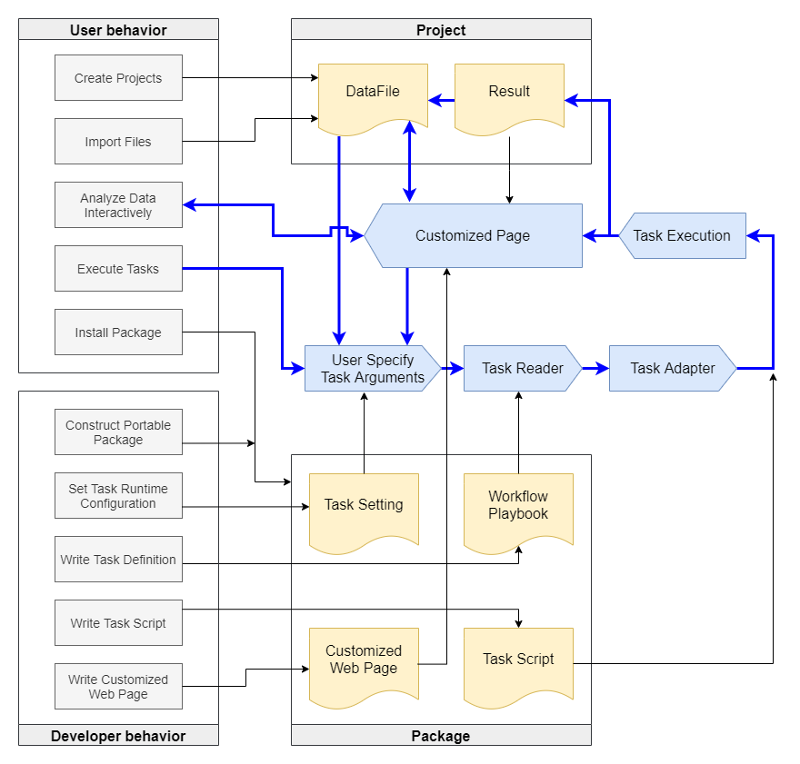

Terminology¶
In this section, we explain several terms that used in the Big Data Processor. These terms include Project, DataFile, Result, Package, Task, and Page. These terms are shown in the following figure which is also displayed in the system operation scheme of the previous section, the concepts. The details and the relationships of these terms are listed below.
{kind=link}
Project¶
A Project is a collection of DataFiles and Results. A project is created with a name and an optional description. Several Packages can also be selected to use in the project. A project can also be shared among users. Please see the Privilege for more information. The Project-related information can be changed after creation.
Under the hood, each Project has a corresponding folder to store all the files or folders which correspond to DataFile records. Different Projects are organized into separated folders and are consider as independent, although DataFiles can be copied and linked among Projects.
As for the Result, A Result can be seen as a history of a task execution. All the provenance of each task run is recorded in a Result. A Result records the task execution time, running parameters, input and output files, standard output and standard error messages, and others. After task execution, the generated output files are new DataFiles that can be used as another task inputs.
DataFile¶
A DataFile record can be generated by importing files or folders. Executing Tasks may also generate output files as DataFile records, if the task has defined output files/folders as arguments. The files and folders of DataFile records are located directly inside the Project folder. For simplicity, we use the in-place folder structure without adding additional nested folders. The filenames and foldernames are the database ids of their corresponding DataFile records. For non-folder files, the filename also preserves its extension, and the extension is also stored as the format property of a DataFile record. The Big Data Processor controls the direct children of the Project folder. Therefore, the system does not aware of file contents inside a folder-typed DataFile.
File Tags¶
Every DataFile record can have its own tags. Valid characters of a tag include numbers [0-9], lower cases of alphabatics [a-z], underlines _ and dashes -. These file tags are mainly used to tell whether a DataFile record is valid to be an input argument of a Task.
That is, these Fle Tags can be used as guards to prevent users to select invalid DataFile records and can be ssen as filters to narrow down the number of DataFile records to select.
When configuring a Task, file tags need to be set in task arguments of input or output DataFile. File tags of input file argument let users to select only valid DataFile records. The file tags of output file argument are tagged for the output files of the task. It is important for task developers to design their tags for a task’s input and output file arguments, since constructions of workflows rely on these tags to pipe output files of one task into input files of another.
Users can also specify their desired tags to recognize their DataFile records.
Result¶
In a Project, a Result can be generated by executing one Task in the selected Packages. You may see a Resord as a history record of task executions. A result record contains the input parameters of the corresponding task, the start time, execution time, standard outputs, standard errors. All the provenance of each task run is stored in a Result record.
If the corresponding task is a workflow, tasks of each steps in the workflow are organized on the web pages. users can clearly view the progress of the workflow executions. Details of each task are recorded in the Result record.
Task Log¶
A task may contain multiple sub-tasks. For example, a batch task may contain 10 sub-tasks to process the 10 raw input files. The execution details related to the 10 sub-tasks are all organized in the Task Log section of the Result record. The details include execution start and end time, the computing resources such as cpu cores, memory size, the standard output and standard errors.
Package¶
As shown in the above figure, a Package contains task settings, Workflow Playbooks, task execution files, and customized Web Pages. A Package can be created by task managers or system administrators. Under the hood, a package is a folder containing the above mentioned files. Task settings and workflow playbooks are edited on the web pages of the BDP system and the system take cares of these files. The customized web pages and task execution files are uploaded/edited by Package developers.
Task Settings are configured via the web pages and are stored in the BDP databases. The task settings include task name, description, type, runtime configurations, and task arguments.
Workflow Playbooks are the detailed task definition. It is designed for fast and concise task configurations in the YAML format. Task developers can write the workflow playbook on web pages.
Task execution files may be the tool binaries or scripts. These files can be uploaded on the web pages and mounted to the container during task executions. For scripts, we provide an online editor to allow editiing scripts on web pages. So that developers can edit their script files and test them immediately.
Customized Web Pages are stored inside the
clientfolder of the package folder. Developers can write or upload html, css, and javascript to write Pages.
A package of the Big Data Processor is designed to be portable. Once a package is constructed, it can be exported as one zip file (currently) and can be installed on another BDP hosts with near zero configurations!
To use a Package, a user must create a Project first and then select Packages for the Project. Then, the defined Tasks and the customized pages can be executed and viewed in the Project.
Task¶
A Task is an execution unit on the Big Data Processor. A Task is categorized into four types: 1) Standard; 2) Workflow; 3) Child; and 4) System.
The standard Task can be executed alone or specified as a task in a workflow-typed Task.
A workflow-typed Task, as the name suggests, defines a workflow of many steps and each step can specify one or more standard- or child-typed Task(s). You may see the standard- or child-typed Tasks as building blocks for workflow constructions.
A child Task is like the standard task except that it must be included inside a workflow. A child-typed Task is hidden from user selection so that it cannot be executed directly.
A system Task can only be executed by system administrators. it is hidden from non-privileged users.
As mentioned in the File Tag section, we can set valid rules for file tags of input/output file arguments of a Task. The input file tags are filters to prevent users to select invalid DataFile records. As for the output file tags, the output DataFile records will carry the tags after task executions.
Tag Match Rules¶
Developers can set the Tag Match Rules for arguments of input DataFile records. The rules can be
Or: The DataFile records that have at least one of the file tags matched are consider valid. Users can thus select those valid DataFile records as input arguments.
And: The DataFile records that have all the file tags of the task argument can be selected as input DataFile records. The DataFile records can have extra tags.
All: The DataFile records should have exactly the same tags of the task argument. No extra tags are allowed.
Workflow Playbook¶
Workflow Playbook is a concise YAML format to configure a Task. A Task on BDP contains one Workflow Playbook.
The Workflow Playbook can be edited on web pages and is automatically organized into the tasks folder inside the package folder. You can see the web page when you are setting the Task. As the name suggested, we can define a workflow as a standard or child Task. Then, we build a mega-workflow as a workflow-typed Task from these Tasks.
For further information, please see the the introduction of Workflow Playbook.
Workflow-typed Task¶
There is a hierarchical structure to build a workflow. A workflow-typed Task can be constructed by piping from output files to input files of standard-typed or child-typed Tasks. Then, each standard-typed or child-typed Task itself could be a small workflow and has its own Workflow Playbook.
With Big Data Processor, workflow developers can use the web pages to directly piping Tasks into a workflow-typed Task by just mouse drags-and-drops. Once a workflow-typed Task is constructed, it can be executed.
Runtime Configuration¶
To make the task portable, the runtime configurations need be separated from taskworkflow definitions, since task developers do not know the runtime environments of the end users. Here, on the Big Data Processor, the administrators can set a global runtime configs for all Tasks in a Package, or set task-specific runtime configs for each Task. The task-specific runtime configs override the configs that defined in the Package. The runtime settings take effect right after changing the configurations on web pages. The runtime settings contain the Task Adapter, adapter-specific options, CPU cores, memory size, the execution concurrency, etc.
Task Adapter¶
The BDP system deploy tasks on various computing resources through Task Adapters. For each of different computing environments, a corresponding Task Adapter can be implemented and extended from a base class. An adapter provides a queue to schedule job executions, monitor job status, and record job messeages such as standard outputs and errors. An adpater may need to synchronize files if jobs are executed remotely.
For more information, please see the Task Adapter section.
Page¶
The Page system is one of the game-changing features of Big Data Processor. It displays interactive web contents in a sandbox environment. The following lists the details of different types of the Page.
- Customizable Pages
Customizable Pages are written by Package developers and stored in the Package folder. They are just html, css and javascript files that are displayed in a sandbox environment. We allow developers to use any front-end framework or any javascript library. This enables us to display all kinds inveractive contents for users, such as interactive documentations , data visualizations, guiding users to execute tasks, etc. We provide a Page client API for developers to directly communicate with the system with javascript functions. Developers can just call our javascript API functions to achieve many things, such as file downloads/uploads, list project files, etc. Basically, the goal of the client API functions is to allow developers to customize web user interfaces for all working stages. There are three entry ways to view customizable Pages.
Project Page: Project Pages are the main entry points for Packages that are selected in the Project. Developers may design pages of documentations, pages to guide users to execute tasks, etc.
Result Page: A Result Page can be used to interactively display results of specific Tasks. Right after submitting a Task to execute, a corresponding Result record is created. Then, users can view the Result Page for that Result Record, if the Package developers provide the web pages and configure them correctly.
DataFile Page: A DataFile Page is like the Result Page except that it corresponds to a DataFile record. That is, a DataFile Page can be displayed when users have selected a DataFile record. Package developers can develope multiple interactive visualizations for each type of DataFile records.
- Non-customizable Pages
There are two types of the non-customizable Pages, the Static File Page (or just Static Page) and the Proxy Page. The Static Page is a specialized DataFile Page which display an index page for the folder-typed DataFile records. For each folder, our system hosts a microservice to serve the corresponding file index page. Users can view file structures through the file index page just like FTP file lists.
The Proxy Page mainly serves for well-developed tools, such as containerized web services. Our system provides the functionalities of the web proxy to serve web contents from the container. It is worth noting that the Big Data Processor can also serve Linux desktop environments inside Docker containers. Thanks to the noVNC package, containerized desktop environments can also be removely connected through http protocol. In this way, users can easily use desktop applications on Linux container through web pages. Sounds cool, right?